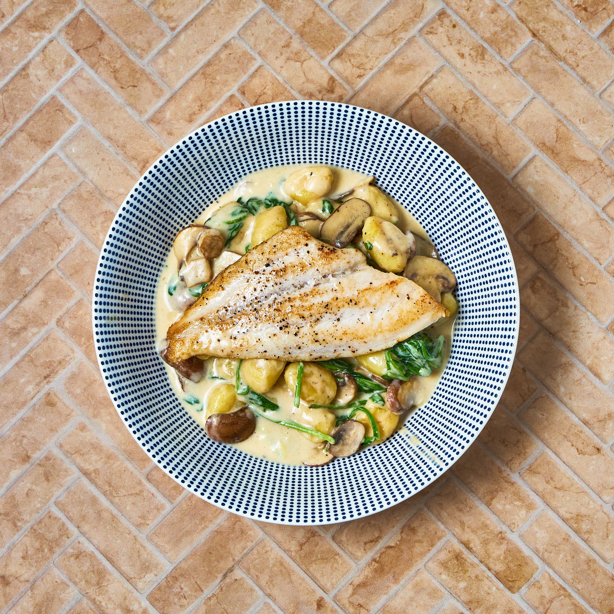

To get back to the Homepage click here: Homepage
Gnocchi and

Description
This is a light meal with gnocchi as the base with white fish and fennel. (I choose sea bass as the white fish.) The fennel brings a nice light texture to the cream. This is perfect as
a quick meal that will also fill you up quickly./p>
Ingredients: (serves 1)
- 2 sea basa fillets
- fennel (whole)
- gnocchi (with any filling of your choice)
- double cream
Steps:
- Fry the fish in the pan to brown the outside.
- Add the gnocchi.
- Add the fennel.
- Add the double cream.
- Leave to simmer for 5-10 minutes.
- Serve & enjoy!